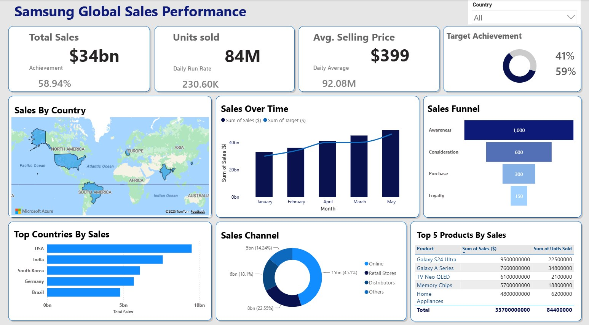
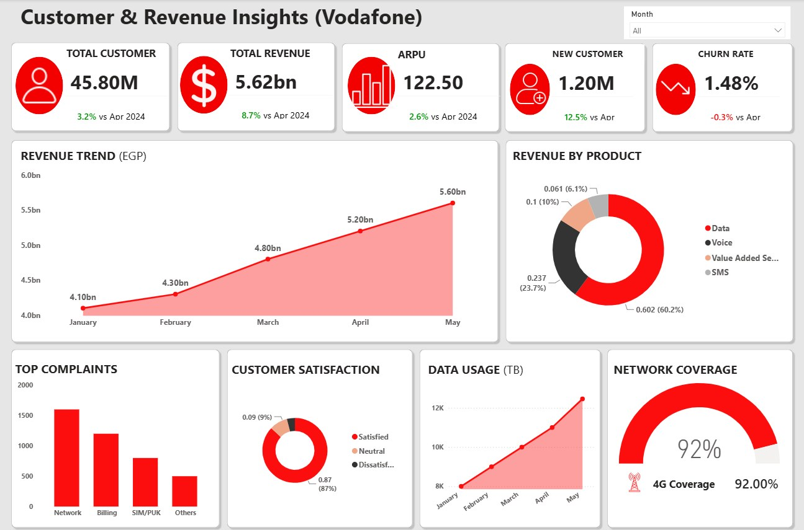

Projects · Data Visualization
Power BI Dashboards
Interactive reporting projects built in Power BI. Each dashboard is a single page of KPI cards, trends and breakdowns with a slicer for filtering.
DASHBOARD 01
Samsung Global Sales Performance
A one-page sales dashboard with KPI cards, a country map, sales against target over time, a sales funnel and channel mix. A country slicer filters the whole page.

What it shows
- KPI cards: total sales, units sold, average selling price and target achievement
- Sales by country on a map, and the top five countries
- Sales over time against target
- Sales funnel from awareness to loyalty
- Sales channel split and the top five products
Key figures on the dashboard
- Total sales of $34bn from 84M units sold
- Average selling price of $399
- Target achievement of 58.94%
- Online is the largest channel at 45.1% of sales
- USA is the top country by sales
DASHBOARD 02
Customer & Revenue Insights (Vodafone)
A telecom dashboard covering customers, revenue, ARPU, churn, complaints, satisfaction, data usage and network coverage, with a month slicer.

What it shows
- KPI cards: total customers, total revenue, ARPU, new customers and churn rate, each compared with the previous month
- Revenue trend (EGP) and revenue by product
- Top complaints and customer satisfaction
- Data usage trend in TB
- 4G network coverage gauge
Key figures on the dashboard
- 45.8M customers and 5.62bn revenue
- ARPU of 122.50 and 1.2M new customers
- Churn rate of 1.48%
- Revenue grows from 4.1bn to 5.6bn EGP between January and May
- Data is 60.2% of revenue and 87% of customers are satisfied
- 4G coverage of 92%
NOTES
How to open the files
The .pbix files open in Power BI Desktop, which is free from Microsoft. Figures shown come from the datasets built for these projects and are not official company results.